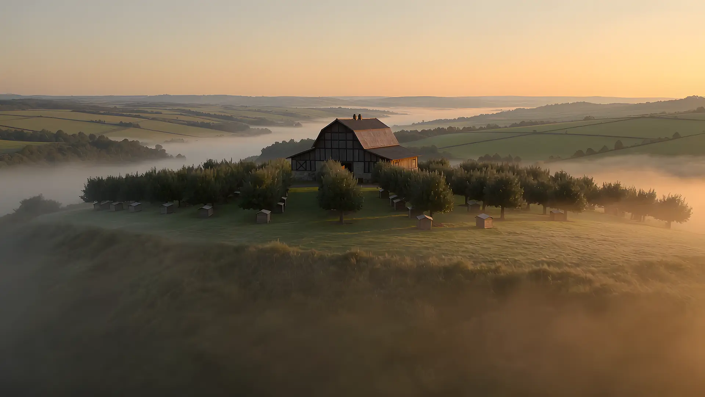

01 / 04 Bitkalnio kalva · 05:42
Midus nuo kalvos, kur bitės pabunda pirmos.
Nedidelė midaus darykla Molėtų ežerų krašte.
Midaus parduotuvė →02 / 04 Sodas · 06:10
312 avilių tarp obelų.
Sodai, liepos, grikiai. Bitės nešeriamos cukrumi.
Kaip gaminame →03 / 04 Klojimas · 18:00
Šešios taurės, vienas ilgas stalas.
Degustacijos trečiadienį–sekmadienį, nuo 26 €.
Rezervuoti vietą →04 / 04 Rūsys · 11 °C
Trys žiemos lietuviškame ąžuole.
Rezervas, 16 %, sunumeruotas ant vaško.
Paragauti rezervo →Darome vieną dalyką lėtai: medaus vyną iš avilių, kuriuos matote nuo rūsio durų.
- Bičių šeimos
- 312
- Rūsyje ištisus metus
- 11 °C
- Ilgiausiai bręsta
- 3 m.
- Nuo Vilniaus
- 62 km
Midūs · 2026 m. derlius
Šeši buteliai, kiekvienas iš vieno žiedo.
Kiekviena partija sunumeruota ant vaško. Pristatome po Lietuvą per dvi dienas, į kitas ES šalis – per keturias–šešias. Užsakymams nuo 60 € pristatymas Lietuvoje nemokamas.
Braukite, kad pamatytumėte visus →
Nežinote, kurį rinktis?
Skonių žemėlapis
Kairėje sausesni, dešinėje saldesni, viršuje lengvi, apačioje sodrūs. Bakstelėkite butelį ir perskaitykite aprašymą arba pasakykite, ką dažniausiai geriate.
Kaip gaminame
Vienuolika mėnesių vienam liepų midaus buteliui.
Degustacijos ir apsilankymai
Užlipkite į kalvą.
Kiekvienas apsilankymas baigiasi prie ilgo stalo klojime. Vairuotojams – medaus ir žolelių degustacija už pusę kainos, kad niekas neliktų nuošalyje.
1 · Data
2 · Laikas
Pirmiausia pasirinkite datą.
3 · Svečiai
Vairuotojai
Kalba
Dovanų dėžutė
Supakuokite dėžutę kantriam žmogui.
Pasirinkite du ar tris butelius, dėžutę ir žodžius atvirukui. Pakuojame į šieną ir pušų spyglius, su partijos aprašymu viduje.
Dėžutė
Buteliai
€0
Atvykite
Šešiasdešimt du kilometrai, paskui žvyrkelis.
| Pr–An | Uždaryta, dirba tik bitės |
|---|---|
| Tr–Kt | 12:00–19:00 |
| Pn–Št | 11:00–21:00 |
| Sk | 11:00–17:00 |
Molėtų r., LT-33101, Lietuva
+370 600 00000 · labas@bitkalnis.example
Neturite automobilio? Autobusas Vilnius–Molėtai važiuoja 75 minutes. Praneškite laiką ir paimsime jus iš Molėtų autobusų stoties už 6 € į vieną pusę.

Be alkoholio
Tas pats medus, stiklainyje.
Liepų, grikių ir vėlyvųjų viržių medus, žalias ir nekaitintas, 450 g stiklainiuose. Jį gali pirkti visi, o rytas su bitininku skirtas ir šeimoms su vaikais nuo aštuonerių.
Svečių knyga
Ką žmonės parašė išeidami.
„Grikių midus kvepia kaip močiutės sandėliukas. Nusipirkau keturis.“
„Atvažiavome į rūsio ekskursiją, o likome antrai degustacijai. Vairuotojo degustacija – puiki mintis.“
„Devintą ryto atidarėme avilį, paskui valgėme medų tiesiai iš korio. Sūnus apie nieką kitą nekalba.“
Klausimai
Kokio skonio midus?
Labiau primena vyną nei medų. Sausas kadagių midus gaivus kaip rislingas, grikių – gilus ir salyklinis, artimas portveinui. Tikrai saldus tik liepų.
Ar siunčiate už Lietuvos ribų?
Taip, į visas ES šalis, pristatant tikrinamas amžius. Dauguma siuntų atkeliauja per keturias–šešias darbo dienas; pristatymas 9,90 €, Lietuvoje nuo 60 € – nemokamai.
Kiek laiko laikosi atidarytas butelis?
Neputojantis midus uždarytas šaldytuve laikosi tris–keturias savaites. Putojantį geriausia išgerti per dvi dienas.
Ar galima išsinuomoti klojimą privačiam renginiui?
Iki 28 svečių, pirmadienio ar antradienio vakarais. Parašykite datą ir atsiųsime meniu.